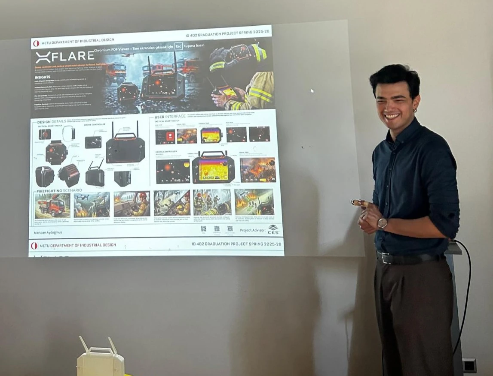

HELLO!
I'm Mertcan. When approaching design, I see products not just as physical objects, but as tangible bridges built between people and their daily environments. I use my analytical perspective to craft industrial designs that make life easier in the physical world.
I want to design technology-integrated products that are actually easy for everyday users to handle. My focus is on turning complex mechanics and smart technology into intuitive, ergonomic forms, making human-product interaction feel natural and effortless.
When I step away from the design desk, you can catch me stepping onto the stage as an actor and vocalist in musicals, capturing moments through photography, or diving deep into the details of coffee brewing techniques.